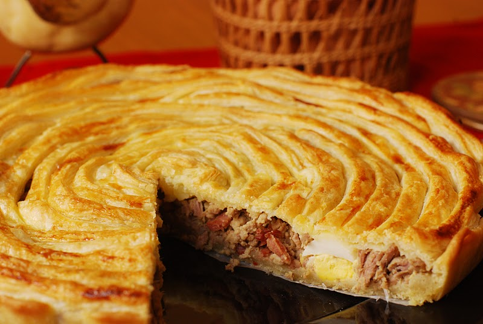
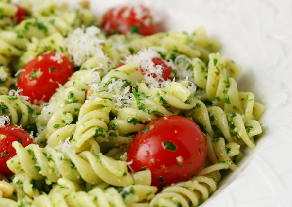
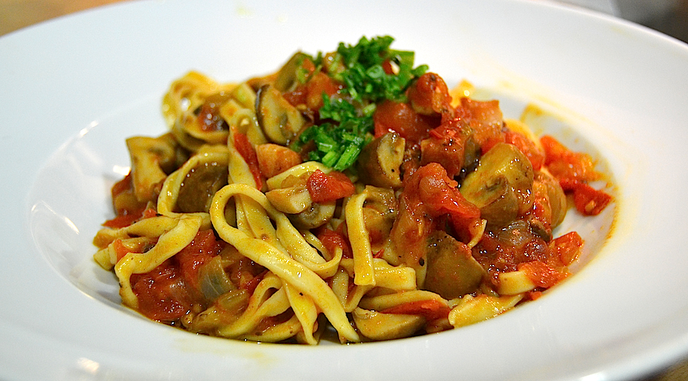

12/06/2017
Apetitosa lasaña gratinada con queso parmesano y mozzarella, lo especial de esta receta es el toque tentador de una combinación de nueces crocantes le dará el gusto suave para que sea un platillo muy original y diferente. Este delicioso relleno de nueces con carne de res y salsa va a ser un manjar delicioso para compartirlo con tus seres queridos en estas fechas tan especiales.
20/05/2017
Hace mucho tiempo no preparaba esta receta y tuve que llamar a mamá para que me recordara algunos pasos a seguir… Los tornillo de espinaca estan conectados a mi niñez, pues mi mamá solía preparárlos. Esta es una receta que bien la pueden acompañar con arroz blanco, arroz primavera o simplemente con una ensalada verde. También puedes prepararlo con vegetales y el resultado siempre sera delicioso.
06/03/2017
Espaguetis a la carbonara es uno de los platos más populares de la cocina italiana pero, también, uno de los más injustamente tratados. Es habitual darle el nombre de “carbonara” a cualquier plato de pasta embadurnado en nata líquida, al que se le suele añadir cebolla o champiñones ,ingredientes que nada tienen que ver con la receta original.